Dreamer (RSSM) on ALE/Pong-v5
Model-based RL: the agent learns a latent world model, trains its policy inside that model's imagination, and is compared against model-free baselines on identical environment steps.
Smoke-scale pipeline demo - 3000 env steps per agent, 1 seed, 100-step episodes, CPU. No agent learned to play; these artifacts show the pipeline, not a result. See docs/demo/README.md and RESULTS.md.
1. It plays
Trained agents acting greedily in the environment, each panel showing exactly the 64x64 input that agent receives. Same seeds for every agent.
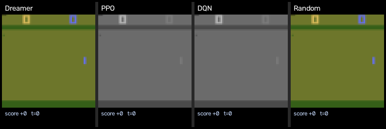
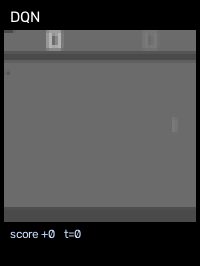
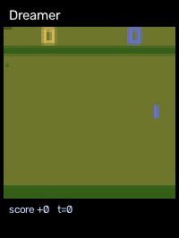
2. It plays inside its own world model
Left: what actually happened. Right: what the RSSM dreamed from the same latent state, decoded to pixels — prior-only, the path the policy is trained on.
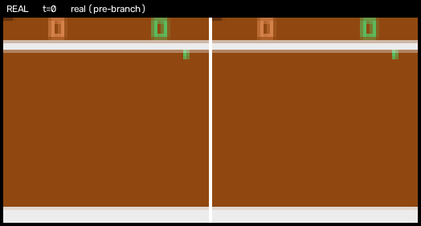
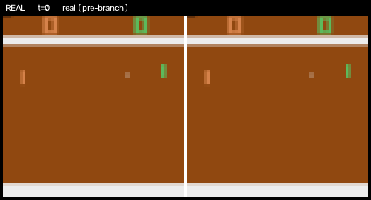
3. It learns faster than the model-free baselines
Episode return against environment steps (post action-repeat) — the sample-efficiency axis — and the wall-clock price of that efficiency.
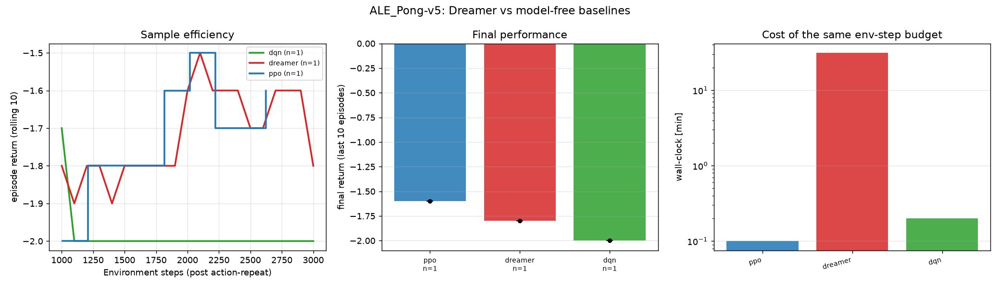
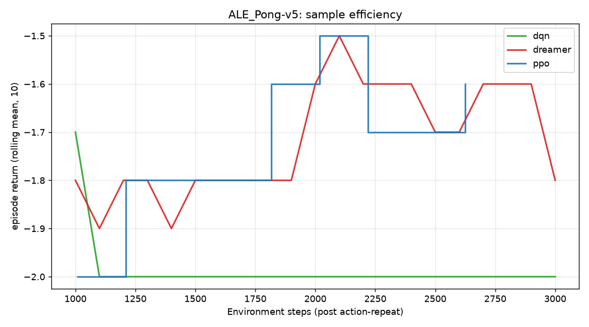
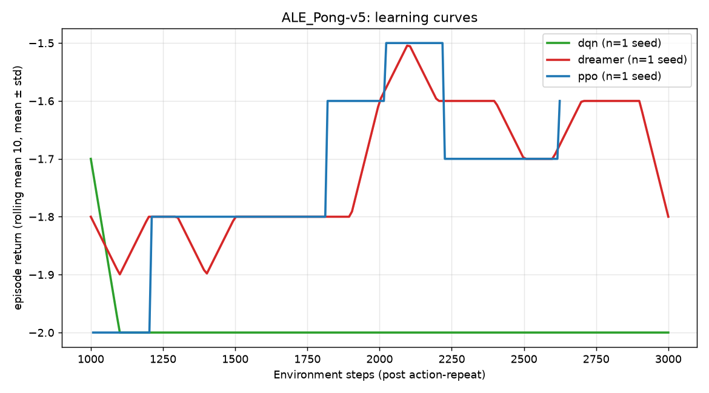
ALE Pong-v5 summary
| agent | seeds | env_steps | final_return_mean | final_return_std | best_episode | wall_clock_min |
|---|---|---|---|---|---|---|
| ppo | 1 | 2624 | -1.6 | 0.0 | 0.0 | 0.1 |
| dreamer | 1 | 3000 | -1.8 | 0.0 | 0.0 | 31.3 |
| dqn | 1 | 3000 | -2.0 | 0.0 | 1.0 | 0.2 |
|---|---|---|---|---|---|---| final_return = mean over seeds of each run's last-10-episode mean; wall_clock = mean seconds of each seed's run, in minutes.
4. What each design choice bought
One Hydra override per variant, same budget and seeds as the base run.
Not generated yet. Produce it with:
python viz/ablation_summary.py
5. World-model diagnostics
Reconstructions, open-loop rollouts and the dream-vs-real return check behind the numbers above.
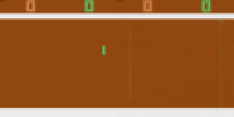
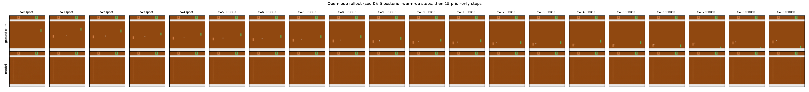
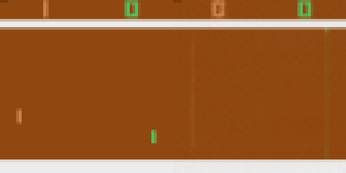
Every figure is generated from recorded runs; nothing on this page is hand-drawn or simulated.